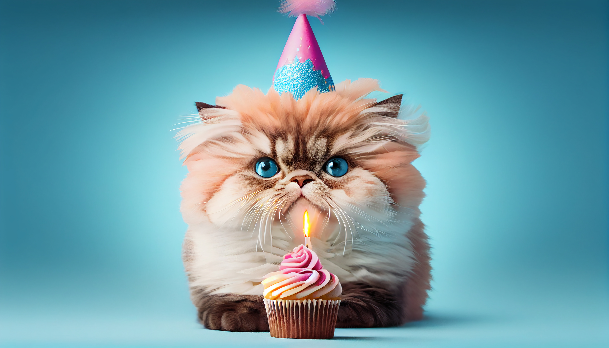

Gatolados - Gelati Artigianali
Bienvenidos al mundo de "GATOLADOS", una encantadora empresa de helados italianos con un divertido toque felino. Gatitos Gelato combina lo mejor de dos mundos: la pasión por los helados italianos auténticos y la adorable temática de gatitos. En gatolados, nos enorgullece ofrecer helados italianos de alta calidad, elaborados con ingredientes frescos y naturales. Nuestra receta tradicional italiana garantiza una textura suave y cremosa que deleitará tus papilas gustativas. ¡Cada bocado es una experiencia única y deliciosa! Pero eso no es todo, ¡nuestro estilo felino es lo que nos diferencia! Cada helado que servimos viene con una pequeña decoración en forma de gatito, ya sea una carita adorable o unas huellitas. ¡Es todo un festín para los amantes de los gatos! Además de nuestras opciones clásicas, como el cremoso gelato de vainilla o el refrescante batido de caramelo , ofrecemos sabores especiales inspirados en los gatitos. ¿Has probado nuestro "Fresitas Peludas" con trocitos de fresa y crema de leche? ¡Es simplemente irresistible! Gatitos Gelato también se preocupa por el medio ambiente y la comunidad. Utilizamos productos locales y sostenibles siempre que sea posible, y apoyamos organizaciones felinas locales a través de donaciones y eventos especiales. ¡Es nuestro pequeño granito de arena para hacer del mundo un lugar mejor! Ven y descubre gatolados , un rincón encantador donde los helados italianos de calidad y los gatitos se unen en una experiencia verdaderamente única y deliciosa. ¡Prepárate para sabores irresistibles y momentos llenos de ternura!
CONOS
Conos helados artesanales, hasta tres bochas de suavidad cremosa. ¡Gatitos de sabor!
Ir a ver!POR KG.
Potes de helado artesanal ¿Un kilo de placer o un cuarto de tentación? ¡Disfruta momentos dulces!
Ir a ver!PALETAS
Paletas heladas: colores vibrantes y sabores frescos. ¡Un mordisco refrescante para alegrar tu día!
Ir a ver!BATIDOS
Batidos helados: cremosidad en cada sorbo. Una delicia refrescante para endulzar tu momento.
Ir a ver!